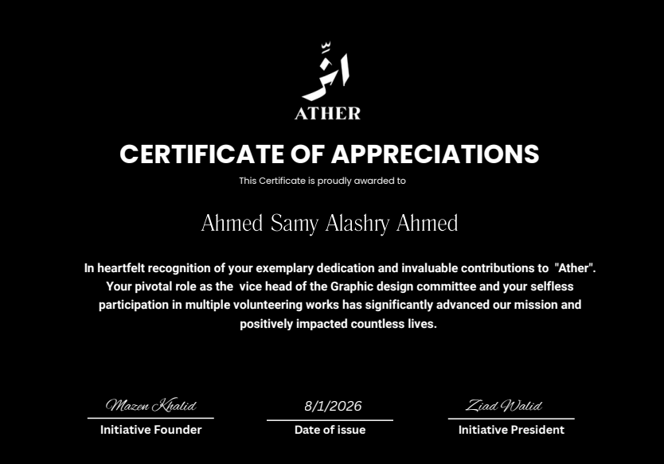

Community & Impact
Community
Service
/ Collaboration
Mentoring emerging talent, organizing community initiatives, and volunteering with organizations that create lasting social impact through knowledge sharing.
Explore Work

Aspiring creators and developers guided through career and skill development.
Community workshops, networking events, and collaborative initiatives.
Hours dedicated to community projects, nonprofits, and cultural programs.
About This Project
A commitment to giving back and supporting community development
This initiative showcases a commitment to social responsibility — using technical expertise and creative skills to mentor the next generation, support nonprofits, and build collaborative relationships that strengthen local ecosystems.
Through various volunteer projects and mentoring programs, the focus has been on sharing knowledge, supporting emerging talent, and contributing to meaningful community initiatives that create lasting impact beyond individual projects.
- Mentored 50+ aspiring content creators and developers
- Organized 15+ community events, workshops, and initiatives
- Contributed 500+ volunteer hours to community projects
- Pro-bono services provided to nonprofit organizations
- Recognized with official certificates for exceptional contribution
Volunteer Recognition
Official certificates from organizations I've contributed to
Recognized for exemplary dedication and invaluable contributions. Led design initiatives and supported multiple volunteering works that positively impacted the community.
Participated in cultural and community initiatives promoting heritage and engagement. Contributed design expertise and organizational support to enhance program impact and reach.
Community Initiatives
Key projects and programs making a real difference
Let's Make a Difference
Let's Collaborate & Create Impact
Open to community projects, mentorship opportunities, and initiatives that create meaningful, lasting change.